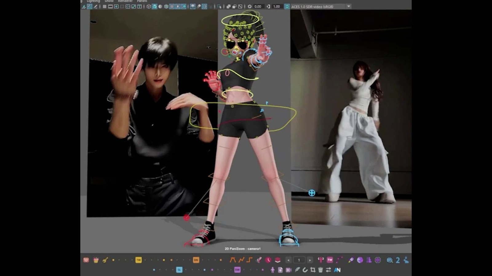

Animo V10：Maya 免費動畫工具集擴到 500+ 功能，加入影片 Reference 與 Arc Tracker
Animo V10/V10.5.4 為 Maya 動畫師整合 500 多項工具，新增 Tools Editor、影片 reference 匯入、camera-space Arc Tracker、Mirror Pose／Animation 等，商用與非商用皆免費。

動畫 ★★★★☆
完整分析
動畫工具整合
V10 把大量零散動畫操作集中到 Tools Editor，並加入影片 reference 直接使用、camera-space arc tracking、mirror pose／animation 等功能，方向不是自動生成動畫，而是降低手工 blocking、polish 的重複操作。
Production 價值
對 Maya 角色動畫團隊，reference、arc、mirror 與各種 timeline／curve 小工具如果能在同一套 UI 找到，能減少 script shelf 碎片化；免費商用也降低在團隊試導入時的授權門檻。
導入測試
先挑一個既有遊戲 attack 或 locomotion shot，比較純 Maya 與 Animo 在 pose mirror、arc 檢查、reference、curve polish 的操作時間；同時確認 Maya 版本、hotkey 衝突、scene callback 和團隊共用設定是否穩定。
BRIEF｜來源已驗證；證據深度較有限，完整分析會明確區分已知資訊與待驗證事項。